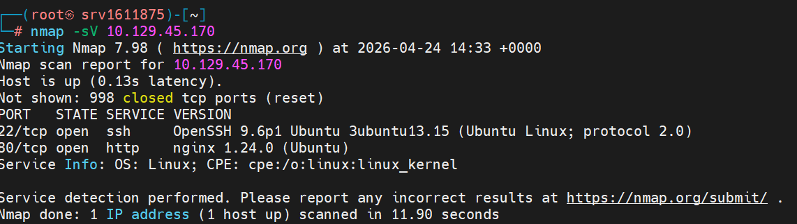

Silentium
Difficulty: Easy | OS: Linux | Release: Active
General Information
| Field | Value |
|---|---|
| Name | Silentium |
| IP | 10.129.45.170 |
| OS | Linux |
| Difficulty | Easy |
| Date | 24/04/2025 |
| Release | Active |
| Status | In Progress |
Initial Enumeration
Open Ports
| Port | Service | Version |
|---|---|---|
| 22 | ssh | OpenSSH |
| 80 | http | Nginx |
Commands
Exploitation
Entry Vector
| Field | Value |
|---|---|
| Vector | Web |
| Flaw | Password Reset Token Leak + Flowise RCE |
| Tools | Burp Suite, FFUF |
Step 1 - Port and service enumeration
Enumerating the ports and services running on the target.

Step 2 - Accessing silentium.htb
Accessing the target's HTTP, we identify a domain silentium.htb.
I found collaborator names on the page: - Marcus Thorne (Managing Director) - Ben (Head of Financial Systems) - Elena Rossi (Chief Risk Officer)

Step 3 - Subdomain discovery
Fuzzing with the discovered domain, the subdomain staging.silentium.htb was found.

Step 4 - Login page
Accessing the subdomain via web, we can see it's a login page, but we don't have credentials.
The page is using Flowise.

Step 5 - Password Reset
Since we have the collaborators' names on silentium.htb's home page, I tried using the email ben@silentium.htb, being the only one with a simple first name and no surname.
Surprisingly, I got a response with a temporary token to reset the password!

Step 6 - Changing the admin password
After a few attempts at changing the password, I managed to do it with the temporary token (you have to be quick before it expires).
I managed to change the password to Password@123
Encryption key found: hdsVqdkOcLN4fwdpvMPtbAi2++qi8yFc

Step 7 - Access to the admin panel
After having the credentials, I accessed the admin panel.

Step 8 - Identifying Flowise
Accessing the admin panel, I identified it's using the Flowise tool.
With this information, I decided to search for CVEs related to the tool. I found two exploits.

Step 9 - Researching exploits
Researching the exploits, I saw that JS Injection allows remote code execution, using a package called CustomMCP.ts.
If the FLOWISE_USERNAME and FLOWISE_PASSWORD environment variables aren't set, only the email and password for Flowise access are required.

Step 10 - Running the RCE exploit
Using the exploit and setting the necessary parameters for the connection, we managed to open a reverse shell with the server.

Step 11 - SSH access as Ben
With shell access, after several attempts manually searching through the folders, I ran a cat looking for environment variables.
I decided to use the SMTP credential for SSH access, where I managed to access the shell with the user ben.

Step 12 - Capturing the User Flag
I accessed the system as ben and captured the first flag.
User Flag: a89d6d7f3b1c4e9a2d5c8b7f4e6a1c3d

Initial Shell
ssh ben@10.129.45.170
# password: hdsVqdkOcLN4fwdpvMPtbAi2++qi8yFc
python3 -c "import pty; pty.spawn('/bin/bash')"
Post-Exploitation Enumeration
Credentials Found
| Type | Value |
|---|---|
| Admin Panel | admin:Password@123 |
| SSH | ben:hdsVqdkOcLN4fwdpvMPtbAi2++qi8yFc |
Privilege Escalation
Step 13 - Looking for escalation vectors
Starting the search for possible privilege escalation vectors.
Some commands didn't work, so I searched for binaries we have permission to run as root.

Flags
| User | Root |
|---|---|
a89d6d7f3b1c4e9a2d5c8b7f4e6a1c3d |
In Progress |
Technical Summary
| Field | Value |
|---|---|
| Root Cause | Password reset token leak + Flowise RCE |
| Attack Chain | Subdomain enum → Password reset → Admin access → Flowise RCE → SSH → Privesc |
| Total Time | ~45 minutes |
Lessons Learned
- What worked: Subdomain enumeration + password reset attack
- What slowed things down: Understanding how to exploit Flowise
- Points of Attention: Always check for password reset vulnerabilities